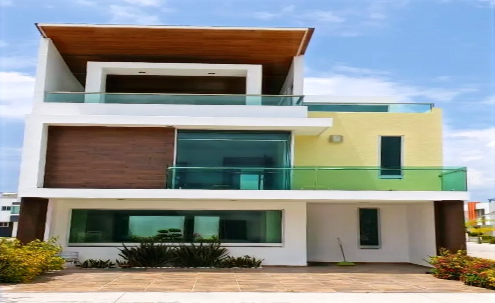
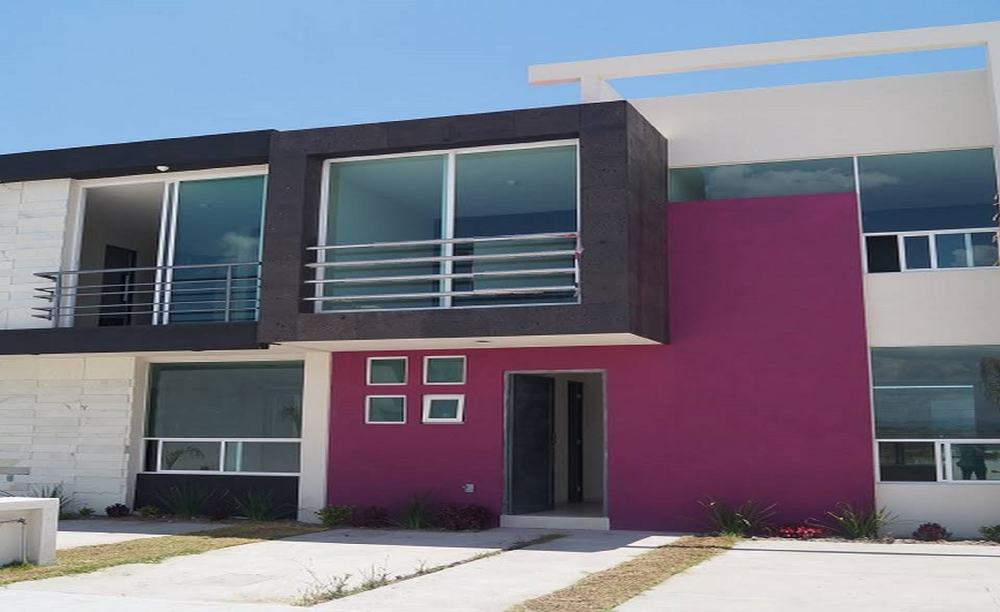

Una historia que sigue evolucionando.
Un proyecto universitario que hoy se convierte en un ejercicio de rediseño y calidad frontend.

De un proyecto de universidad a un portafolio más ambicioso.
La Providencia comenzó como un sitio informativo para presentar un fraccionamiento en Acámbaro, Guanajuato: páginas de casas y terrenos, una galería, información general y contacto.
Esta versión recupera el material original y lo organiza bajo una nueva dirección de arte: diseño editorial, fotografías protagonistas, navegación más clara y adaptación a distintas pantallas.
El propósito de esta renovación es demostrar evolución técnica y cuidado por la experiencia de usuario. No se trata de un sitio oficial de ventas actualizado.

Diseñar con intención.
- 01Claridad primero
Información fácil de recorrer, sin bloques innecesarios.
- 02Imagen con propósito
Fotografía real del archivo para mostrar el espacio.
- 03Detalles que importan
Accesibilidad, navegación y una experiencia responsiva.